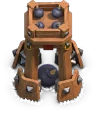
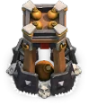
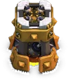
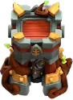

Bomb Tower — Clash of Clans
Updated: 26 August 2026 · By the Goblins Farm team
The Bomb Tower deals area damage to ground units and detonates when destroyed, damaging whatever killed it. That death explosion makes it particularly awkward for the cheap swarms it is designed to counter.
- Levels
- 13
- Size
- 3x3
- Category
- Defense
- Damage per second
- 24
- Targets
- Ground only
- Range
- 6 tiles
- Unlocked at
- Town Hall 8
- Most you can place
- 2
- Role
- Splash defence, ground only
What it does
Area damage against ground troops while alive, plus a substantial explosion on destruction. The explosion frequently kills the fragile troops that had just finished it off, which is why swarm armies lose momentum around it.
Placement
- In compartments swarms must enter, so both the splash and the death explosion land on a group.
- Alongside single-target defences, which handle the large units it cannot.
- Not on the perimeter, where it is destroyed cheaply and its explosion catches nothing important.
 How it looks at each level
How it looks at each level




Stats by level
| Level | Hitpoints | DPS or effect | Build cost | Build time | Town Hall |
|---|---|---|---|---|---|
| 1 | 650 | 24 DPS | 700,000 Gold | 12 h | 8 |
| 2 | 700 | 28 DPS | 1,000,000 Gold | 18 h | 8 |
| 3 | 750 | 32 DPS | 1,300,000 Gold | 1 d | 9 |
| 4 | 850 | 40 DPS | 1,800,000 Gold | 1 d 12 h | 10 |
| 5 | 1,050 | 48 DPS | 1,900,000 Gold | 1 d 18 h | 11 |
| 6 | 1,300 | 56 DPS | 2,000,000 Gold | 2 d | 11 |
| 7 | 1,600 | 64 DPS | 4,000,000 Gold | 3 d | 12 |
| 8 | 1,900 | 72 DPS | 5,000,000 Gold | 3 d 12 h | 13 |
| 9 | 2,300 | 84 DPS | 6,000,000 Gold | 4 d | 14 |
| 10 | 2,500 | 94 DPS | 7,000,000 Gold | 4 d 12 h | 15 |
| 11 | 2,700 | 104 DPS | 8,500,000 Gold | 5 d | 16 |
| 12 | 2,900 | 114 DPS | 14,500,000 Gold | 7 d | 17 |
| 13 | 3,050 | 122 DPS | 25,000,000 Gold | 13 d | 18 |
| Town Hall | Available |
|---|---|
| TH8 | 1 |
| TH9 | 1 |
| TH10 | 2 |
| TH11 | 2 |
| TH12 | 2 |
| TH13 | 2 |
| TH14 | 2 |
| TH15 | 2 |
| TH16 | 2 |
| TH17 | 2 |
| TH18 | 2 |

Where these numbers come from. Read from Clash of Clans' own game files, client build 18.400.21. They are exact for that build and do not reflect anything released after it, so verify in game before committing an upgrade.
Game values are read from Supercell's own game files, reproduced as fan content under Supercell's Fan Content Policy. Goblins Farm is not affiliated with, endorsed, sponsored, or specifically approved by Supercell, and Supercell is not responsible for it.
 Frequently asked
Frequently asked
What happens when a Bomb Tower is destroyed?
It explodes, damaging nearby ground troops. That often kills the fragile swarm units that just destroyed it, which is what makes it particularly effective against cheap massed armies.
Is the Bomb Tower good against air?
No, it targets ground only. Pair it with anti-air coverage rather than treating it as general splash protection.
 Keep reading
Keep reading
Goblins Farm is not affiliated with, endorsed by, sponsored by, or specifically approved by Supercell. Clash of Clans is a trademark of Supercell Oy. This material is unofficial fan content produced under Supercell's Fan Content Policy. Game values change with every update; always verify in-game before committing an upgrade.